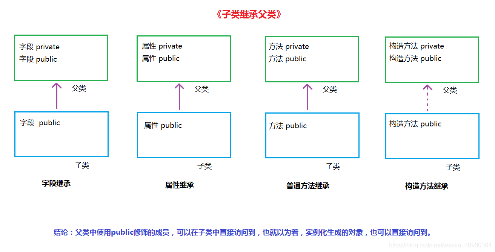
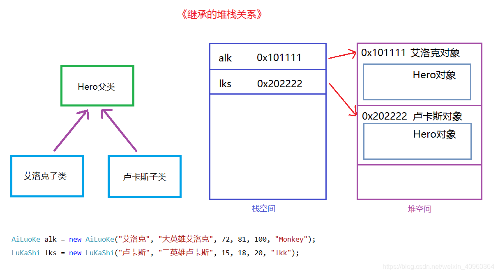
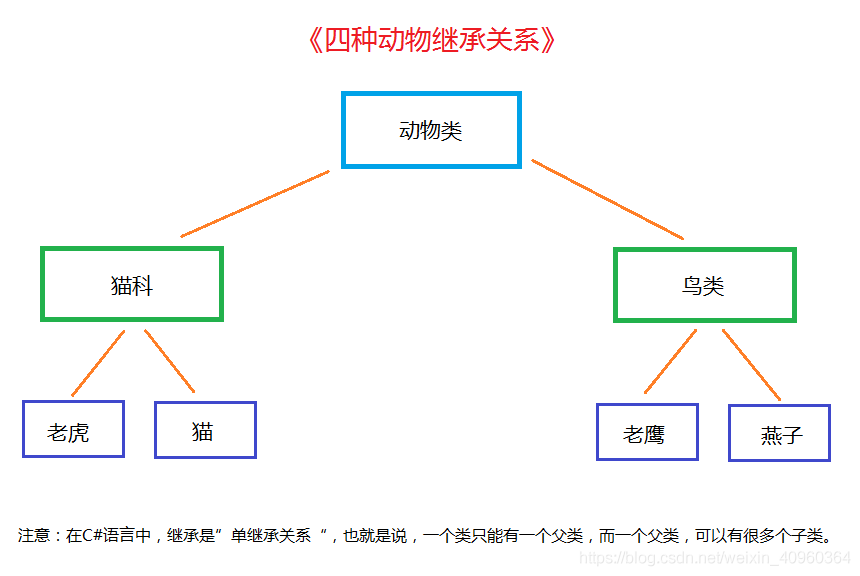

一、继承之原理分析
1.继承简介
什么是继承？
面相对象的三大特性：封装、继承和多态。
将一堆类中的公有成员抽取出来，作为一个父类。然后这一堆类继承这个父类，共享父类的资源，这就叫继承。
继承是类与类之间的关系。
继承的好处是啥？
优化代码结构，让类与类之间产生关系；
提高代码复用性，便于阅读；
为“多态”提供前提，继承是拿来拥有，多态是发展变异。
2.语法格式
class 子类：父类 |
二、继承之构造方法
子类继承父类构造方法（通过base向父类方法传初值）：
1.编写父类构造方法
例如：在Hero类中创建构造方法，用于初始化父类中的成员
//父类 |
2.编写子类构造方法
在子类中编写各自的构造方法，使用base关键字传值给父类
关键字base，代表父类；
关键字this，代表当前类；
//子类 |
3.实例化子类对象
在实际开发中，一般情况下只会实例化子类的对象，因为子类才是具体的事物，父类是子类公共数据的向上抽象。
三、继承之成员继承
1.子类继承父类哪些成员？
字段：
父类中的字段可以用public和private（大多数）修饰
private修饰的字段，子类无法访问。
public修饰的字段，子类可以访问，使用base.字段名。
属性：
父类中的属性可以用public（大多数）和private修饰
private修饰的属性，子类无法访问。
public修饰的属性，子类可以访问，使用base.属性名。
普通方法：
父类中的方法可以用public和private修饰
private修饰的方法，子类无法访问。
public修饰的方法，子类可以访问，使用base.方法名（）。
构造方法：
父类中的构造方法可以用public修饰
public修饰的构造方法，子类可以访问，使用base（）。

2.继承的堆栈关系

四、继承之综合
1.如何抽向父类？
抽象的前提是这一堆类必须是同一类事物，有共性才能向上抽取。
比如各种品牌的手机，可以抽象成手机类。
2.继承图

上图描述了继承关系，子类拥有父类的所有属性和方法。
但这里存在一个问题，比如动物类拥有一个叫声的方法，那么其子类也拥有同样方法，也就是老虎类、猫类、老鹰类和燕子类都会叫，但实际上他们的叫声是不同的，每种动物都有自己独特的叫声。
那么，在继承的前提下，如何让每种动物拥有自己独特的叫声呢？
这就涉及到多态咯！